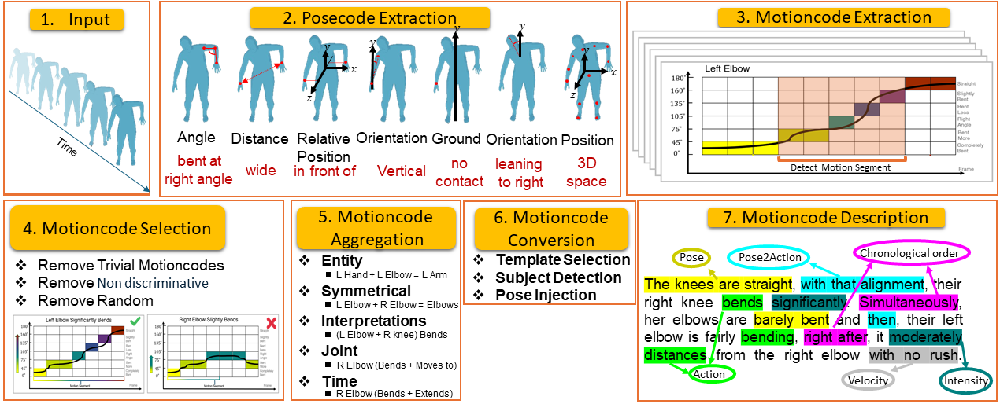
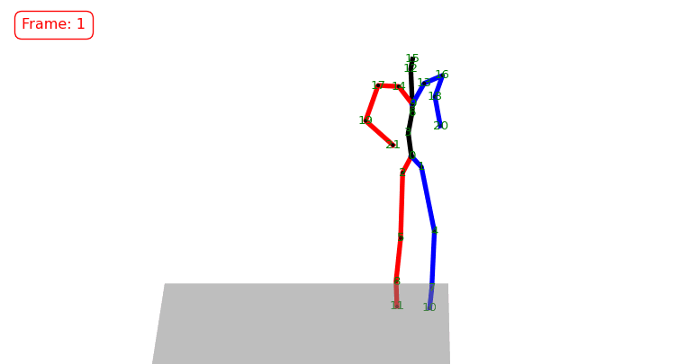
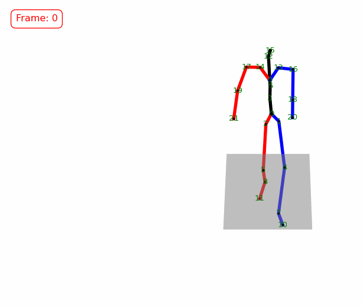
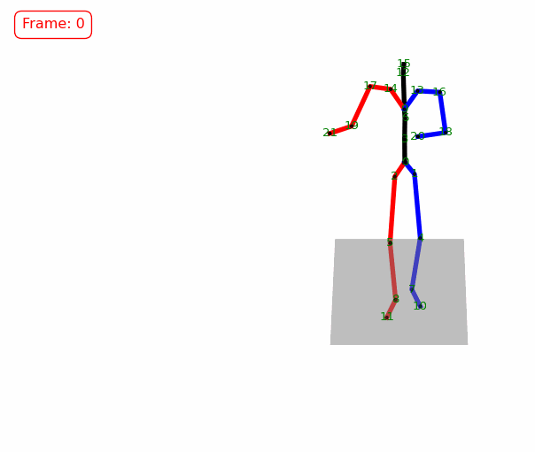
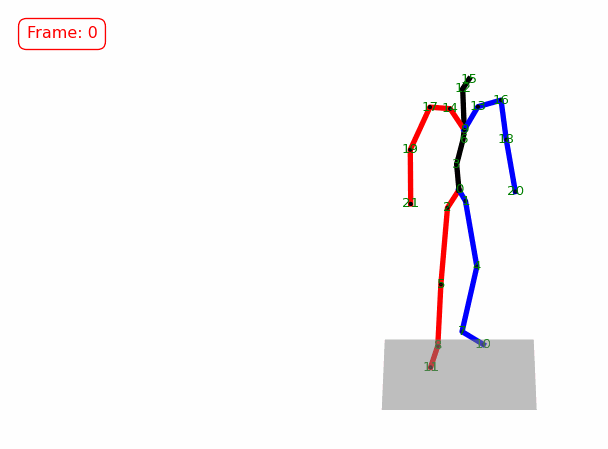
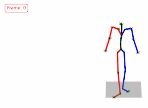
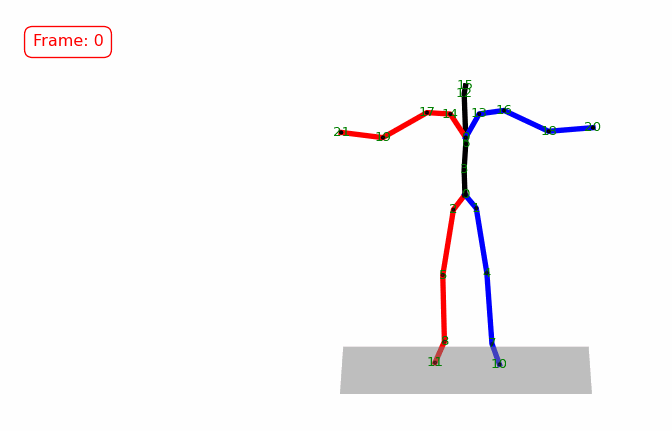

1School of Computing Science, Simon Fraser University, Burnaby, BC, Canada 2Dept. of Electrical and Computer Engineering, University of Alberta, Edmonton, Alberta, Canada
A person goes from a standing position to a bended knee while gesturing.
MotionScript Enhanced Caption
His left elbow and his left knee are at right angle. From this stance, the left knee extends, and not long after, it bends. Just moments before, both hands are further down than his hips, near to the left ankle. With that pose, his right hand spreads significantly apart from the left ankle and right after, gets closer to the right foot. In the second right before, he moves upwards and in the meantime, moves towards the front. A second later, he shifts far to the left. Simultaneously, both hands spread away from the left foot. Meanwhile, his left hand spreads significantly apart from his left ankle. Shortly after, he shifts downwards and a moment later, he shifts downwards briskly. The right knee is unbent and from that pose, the right knee bends significantly.
This paper proposes MotionScript, a motion-to-text conversion algorithm and natural language representation for human body motions. MotionScript aims to describe movements in greater detail and with more accuracy than previous natural language approaches. Many motion datasets describe relatively objective and simple actions with little variation on the way they are expressed (e.g. sitting, walking, dribbling a ball). But for expressive actions that contain a diversity of movements in the class (e.g. being sad, dancing), or for actions outside the domain of standard motion capture datasets (e.g. stylistic walking, sign-language, interactions with animals), more specific and granular natural language descriptions are needed. Our proposed MotionScript descriptions differ from existing natural language representations in that it provides direct descriptions in natural language instead of simple action labels or high-level human captions. To the best of our knowledge, this is the first attempt at translating 3D motions to natural language descriptions without requiring training data. Our experiments show that when MotionScript representations are used in a text-to-motion neural task, large language models can be used to generate unseen complex motions.
Video
Approach

The process of generating textual representation of human motions is synthesized directly from 3D skeleton sequences. First posecodes, a quantifiable representation of static pose attributes, are extracted. Next, temporal changes are evaluated in posecodes over time to capture the dynamic aspect of motions in a categorical form. Finally, a methodology that identifies motioncodes, a novel representation of movement patterns, is applied. Afterwards, a selection process is applied on the detected motioncodes to filter out redundant information and aggregate them to convert the motioncodes into concise and coherent natural language sentences.
Results
Bridging the Gap Between LLMs and Motions
Explore the generated motions from human descriptions and LLM-generated captions using two different models. The animations are presented in both baseline and augmented forms. T2M-GPT is trained on original captions from the HumanML3D dataset, while T2M-GPT+ is trained with augmented data by MotionScript. LLM-generated captions are created by prompting an LLM to describe human motion.
Dancing
Original Caption
The body is in a dancing action while doing a performance.
MotionScript Enhanced Caption
The left elbow advances from behind the right one to in front of the right one. At the same time, she moves a great distance to the right. Meanwhile, she moves a bit downwards. At the same time, the right hand moves from behind the left one to a position in front of the left one and comes significantly closer to the left knee. She moves slightly downwards speedily. Simultaneously, she shifts forward.

Original Caption
The person is performing while in a dancing action.
MotionScript Enhanced Caption
She shifts a great distance backward rapidly. The left hand lifts from below the neck ascending to above the neck. She shifts slightly downwards and a second later, she shifts to the right just a little bit. In the second right before, both knees are bent slightly and from this position, her right knee bends and speedily. Meanwhile, her left elbow is almost completely bent and from this stance, her left elbow extends.

Original Caption
This person is going backwards and is dancing.
MotionScript Enhanced Caption
The right hand moves nearer to the right foot. Immediately after, he moves a great distance backward quickly. Right after, the left hand raises from below his neck to above his neck.

Original Caption
The subject is performing while making a dance pose.
MotionScript Enhanced Caption
He moves forward and not long after, moves backward.

Original Caption
Someone is in a dancing action while doing a performance.
MotionScript Enhanced Caption
He shifts backward just a little bit.

Exercise
Original Caption
A person is doing hand exercises while making a dance pose.
MotionScript Enhanced Caption
The right hand moves from the left side of the right shoulder to the right side of the right shoulder, and not long after, it moves from the right side of the right shoulder to the left side of the right shoulder. In the second right before, the right elbow is ahead of his left elbow and is partly bent, and from this stance, his right elbow extends.

Original Caption
The subject is lowering a body part and is making hand exercises.
MotionScript Enhanced Caption
The elbows are a bit bent, and from that pose, both elbows bend.